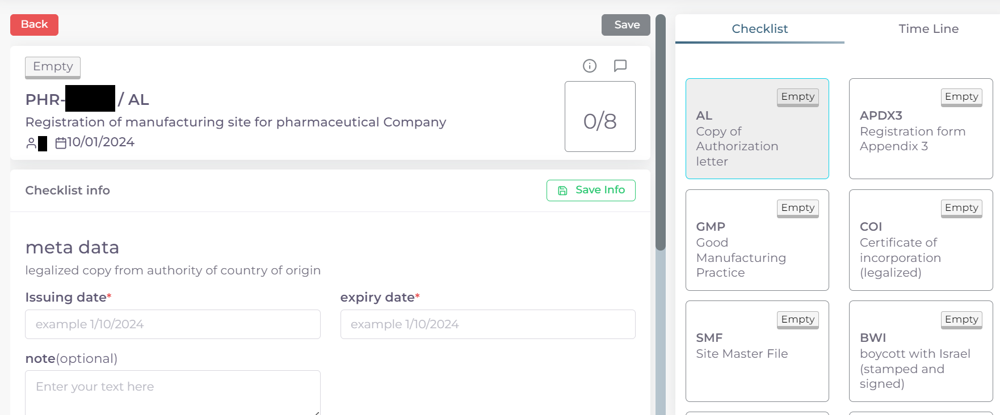
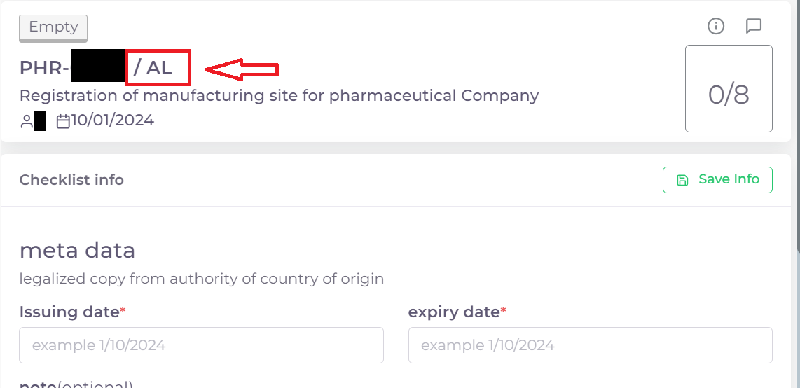

خطوات تقديم معاملة اضافة نشاط لشركة اجهزة طبية او مختبرية
اولا: بدء معاملة جديدة واختيار نوع المعاملة:
من واجهه الحساب الرئيسية نضغط على زر new لغرض بدء معاملة جديدة:

ثم نختار نوع المعاملات المختصة بالمواقع التصنيعية:
ثم نختار نوع المعاملة وهي خط انتاج:
ثم نختار نوع المعاملة وهي اضافة نشاط لشركة اجهزة طبية او مختبرية:
ثانيا: اختيار الموقع التصنيعي المسجل مسبقا المراد اضافة خط انتاجي له و ملئ معلومات الخط او الخطوط المضافة وبدء المعاملة:

اختيار وقت تدقيق المعاملة حسب اوقات الدوام الرسمي في الوزارة:
ملاحظة
الشفت المسائي: يكون وقت تدقيق المعاملة من ال 8 صباحا الى ال 5 مساءًا
الشفت الصباحي: يكون وقت تدقيق المعاملة من 8 صباحا الى ال 2مساءًا
الشفت المسائي يكون اسرع لان وقت التدقيق اليومي اكثر
تكلفة التسجيل للشفت المسائي تكون اكثر من الصباحي
اختيار الموقع التصنيعي المراد اضافة خط انتاجي له:

بعد اختيار الموقع التصنيعي تضهر معلومات الموقع:

ثم نذهب لنهاية الصفحة لاختيار نوع الاضافة:
اختيار خط انتاجي مسجل مسبقا ومربوط بالمكتب العلمي لغرض تفعيله
لغرض اضافة خط انتاجي جديد للموقع التصنيعي:
بعد اختيار نوع الاضافة نقوم باختيار نوع الخط الانتاجي ومعلوماته:

وتشمل:
نوع نشاط الخط الانتاجي Activity:
مستوى الخطورة Risk Level:
اذا كان المنتج حيوي فيتم تحديد الحقل Biological:
ملاحظة
في حالة تفعيل خط انتاجي مسجل مسبقا ومربوط في المكتب العلمي يتم اختيار الخط فقط دون ملئ اي حقول
الضغط على Save لحفظ الخط او الضغط على Cancel لاهمال الخط:

يمكن اضافة اكثر من خط انتاجي للمعاملة الواحدة عن طريق تكرار الخطوات السابقة
بعد اضافة كافة الخطوط الانتاجية المطلوبة نعود الى اعلى الصفحة ونضغط على Create لغرض بدء المعاملة:

ثالثا: ملئ قوائم متطلبات المعاملة Cheacklist:
بعد بدء المعاملة نرى قسم قوائم المتطلبات Cheacklist على اليمين قد فتح الدخول له

ملاحظة
لكل معاملة عدد محدد من قوائم المتطلبات Cheacklist التي يجب ملئها جميعا قبل ارسال المعاملة
وفي حالة معاملة اضافة نشاط - شركة مستلزمات طبية او مختبرية عدد القوائم Cheacklist المطلوبة في المعاملة هي 3:
ويمكن ملاحظة حالة اي Checklist من خلال الركن العلوي الايمن:
وتكون الحالة Empty اي لم يتم ملئ القائمة بعد.
ملاحظة
وتشمل ال cheacklist في حالة معاملة اضافة نشاط لشركة اجهزة طبية او مختبرية:
رسالة التخويل AL:

رسالة الطلب الرسمية من الشركة OLR:

شهادة ال iso:
تحذير
قبل البدء بملئ اي Cheacklist يجب مراعاة ما يلي:
ملئ الحقول المطلوبة ان وجدت
يجب رفع الملف الخاص في ال Cheacklist بصيغة pdf
ان يكون الملف المقدم يحوي فقط اوراق الملف المخصصة لل Cheacklist
كيفية ملئ الحقول ورفع الملفات لل Cheacklist وطريقة حفظ التقدم:
نضغط على احد القوائم للبدء وتظهر صفحة القائمة :

ملاحظة
يمكننا معرفة ال Cheacklist الحالية من خلال
اسم ال Cheaklist:
او من خلال لون الحد الخارجي للقائمة على اليمين:

نقوم بملئ الحقول المطلوبة ان وجدت:

ثم نقوم بحفظ معلومات الحقول بعد ملئ كل الحقول المطلوبة عن طريق الضغط على زر Save Info:

ملاحظة
في حالة حدوث خطأ في ادخال المعلومات وتم حفظ التقدم فيمكن التعديل على الحقول عن طريق الضغط على Edit:

ثم تغيير الحقول المطلوبة والضغط على Save Info لحفظ التغييرات الجديدة او الضغط على Cancel لتجاهل التغييرات

والان نقوم برفع الملف الخاص بهذة القائمة عن طريق النزول لقسم Attachments في اخر الصفحة :

نقوم بالضغط على ايقونة الرفع واختيار ملف للرفع:

ويضهر الملف بعد رفعه كما موضح ادناه:

ملاحظة
في حالة رغبتك بالتاكد من الملف فيمكنك عرض الملف المرفوع عن طريق الضغط على الايقونة رقم 1.
واذا اردت تنزيل الملف نضغط على الايقونة رقم 2 .
واذا اردت حذف الملف فنضغط على الايقونة رقم 3 .
واذا اردت اضافة ملاحظة حول الملف نضغط الايقونة رقم 4 :

بعد رفع الملف وملئ الحقول ان وجدت نعود الى بداية الصفحة ونضغط على save لغرض حفظ ال cheacklist :

ملاحظة
بعد حفظ تقدم ال cheacklist نلاحظ تغيير حالة ال cheacklist الى Draft وتعني ان القائمة تم ملئ حقولها وتم رفع الملف ايضا, ونلاحظ ايضا زيادة موشر ال cheacklist بمقدار 1 وتعني انه تم ملئ ال cheacklist وحفظ التقدم بنجاح :

نقوم بملئ كل ال Cheacklist باستخدام نفس الطريقة
بعد ملئ كافة ال Cheacklist وتحول حاتهم الى Draft يمكننا ملاحظة عدد ال Cheacklist التي تم ملئهى قد اكتمل:

بعد تدقيق المعلومات والملفات المرفوعة يمكن الان ارسال المعاملة الى الجهات المختصة لمراجعتها:
تحذير
لا يمكن تعديل اي حقول او ملفات بعد ارسال المعاملة لذلك يرجى التاكد جيدا قبل الارسال. وفي حال حدوث اي خطأ يرجى التواصل مع قسم الدعم الفني لتلقي المساعدة اللازمة
نضغط على زر Submit في واجهه المعاملة الرئيسية لغرض ارسال المعاملة:

تحذير
في حالة وجود خطأ في اختيار نوع المعاملة او شيئ مشابه يمكن اهمال المعاملة الحالية عن طريق الضغط على زر Neglect:
ملاحظة
للانتقال من واجهه ال احد ال Cheacklist الى واجهه المعاملة الرئيسية نضغط على زر ال Back:
لتاكيد عملية الارسال نرى حالة المعاملة الرئيسية وحالة كل Cheaklist قد تحولت الى Submitted اي تم الارسال بنجاح:

بعد الانتهاء من الارسال يجب مراجعة شعبة العلاقات في وزارة الصحة مع جلب الملفات المصدقة والاصلية المطلوبة حسب تعليمات الوزارة وايضا لدفع فاتورة الاستمارة الالكترونية.